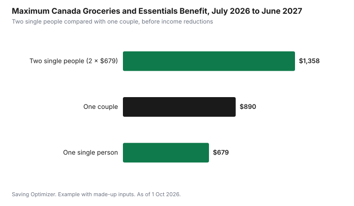

Weddings · Canada
After the Wedding: Telling the CRA, Benefits and Taxes for Couples in Canada
In Canada, you must tell the Canada Revenue Agency (CRA) when you marry or become common-law, by the end of the month after the month your status changed, as of 1 October 2026. After the change, the CRA works out benefits such as the Canada Child Benefit (CCB), from the month after the change, and the Canada Groceries and Essentials Benefit (CGEB, which replaced the GST/HST credit in July 2026), from the next quarterly payment, on your combined family net income instead of each person's own income. A couple usually gets less than two single people, and if you report late the CRA can recalculate back to the date of the change and ask you to repay what you were overpaid. Marriage also opens up some tax advantages: credits one spouse can transfer to the other, pooled medical and donation claims, and spousal RRSPs.
Key takeaways
- Deadline: tell the CRA by the end of the month after the month you married or became common-law.
- Common-law generally starts after 12 continuous months of living together in a conjugal relationship, or sooner if you have a child together or share custody of one of your children.
- Benefits are recalculated on adjusted family net income: the CCB from the month after the change, the CGEB from the next quarterly payment. Late reporting can create an overpayment you must repay.
- CGEB maximums for July 2026 to June 2027: $679 single, $890 couple, plus $234 per child under 19, before income reductions.
- Each spouse still files a separate return, but each reports the other's net income, and some credits can be shared or transferred.
- Example with made-up inputs: a couple who report on time avoid a surprise repayment the next spring.
When your marital status changes for tax purposes
For the CRA, you are married from the date of your wedding. Common-law status is different, because no ceremony marks it. You are generally considered common-law when you live with a person in a conjugal relationship and one of these is true: you have lived together for 12 continuous months, you are the parents of a child by birth or adoption, or you have custody and control of your partner's child (or your partner has custody and control of yours) and the child depends wholly on the other person for support. Short separations of less than 90 days because of a breakdown in the relationship do not interrupt the 12 months.
That means many couples become common-law for tax purposes long before their wedding. If you moved in together two years ago and you only told the CRA about the wedding, your status may already have been wrong for a year. The fix is to report the correct date, not the wedding date, when you update it.
| Situation | Status for the CRA | Date the change takes effect |
|---|---|---|
| Legally married | Married | Wedding date |
| Living together in a conjugal relationship for 12 continuous months | Common-law | The day you reach 12 months |
| Living together with a child of the relationship (birth or adoption) | Common-law | When both conditions are met, even before 12 months |
| Living together and sharing custody and control of one partner's dependent child | Common-law | When both conditions are met |
| Dating but living apart | Single | No change to report |
How and when to tell the CRA
The deadline is the end of the month after the month your status changed. If you married on 19 September, the CRA should hear from you by 31 October. You can update your marital status in CRA My Account (the fastest route), by calling the CRA's benefits line, or by sending Form RC65, Marital Status Change. Both partners should check that their own records show the same status and date, and each should have their spouse's or partner's social insurance number and name exactly as the CRA has them.
- Use CRA My Account: change marital status under your profile, then enter your spouse's or partner's details.
- Or send Form RC65 by mail, signed by both of you if you are both receiving benefits.
- Check your direct deposit and address at the same time, especially if you moved in together.
- If you changed your name, update your SIN record with Service Canada first, then follow the CRA's instructions for name changes.
- Keep a note of the date you reported and any confirmation number.
If you have not yet set up online access, the CRA My Account guide walks through it. Do not wait for your next tax return to report the change; the return is filed months later, and by then several benefit payments may have been calculated on the wrong income.
What the CRA recalculates
Most federal and many provincial benefit programs are based on adjusted family net income: your net income plus your spouse's or common-law partner's. When you become a couple, the CRA stops looking at each of you separately and adds your incomes together. The CCB is adjusted starting with the month after the month your status changed, according to the CRA's CCB guide (T4114). The CGEB is paid quarterly, so the change shows up in the next quarterly payment: in the CRA's own example in guide RC4210, a man who married in August 2026 and told the CRA in September has his CGEB based on the couple's income starting with the October 2026 payment.
| Benefit | What changes | Notes |
|---|---|---|
| Canada Groceries and Essentials Benefit (formerly GST/HST credit) | One payment per couple, based on family net income | Only one spouse receives it; the couple maximum is lower than two singles |
| Canada Child Benefit | Based on combined family net income | Higher family income usually means a lower monthly payment |
| Provincial and territorial benefits paid with the CGEB or CCB | Usually based on family net income | For example, the Ontario Trillium Benefit and other provincial credits |
| Canada Workers Benefit | Family rules and thresholds apply | Claimed on the tax return |
| Guaranteed Income Supplement and Allowance (seniors) | Based on combined income of the couple | Service Canada should also be told about the change |
The Canada Child Benefit amounts guide explains how family net income affects the CCB. If one partner already had children and the other did not, the CCB can drop noticeably once the new partner's income is added, so plan for that in your budget.
The Canada Groceries and Essentials Benefit for couples
The Canada Groceries and Essentials Benefit replaced the GST/HST credit in July 2026, with amounts raised by 25% for five years, according to the Government of Canada. For the July 2026 to June 2027 period, the maximum is $679 for a single person, $890 for a couple, and $234 for each child under 19. The CRA's CGEB guide (RC4210) says payments are made on the 5th of July and October 2026 and of January and April 2027, or on the last business day before when the 5th falls on a weekend or federal statutory holiday, which put the July 2026 payment on Friday 3 July. Amounts are reduced once family net income passes a threshold, so many couples receive less than the maximum or nothing at all.
Two single people with low incomes could each receive up to $679, or $1,358 together. As a couple, the maximum is $890. That difference is not a penalty for marrying; it reflects that couples share household costs. But it does mean that if you keep receiving two single payments after you become a couple, the CRA will later ask for the extra back.

Overpayments: why reporting late costs money
When the CRA learns about a status change late, it recalculates your benefits back to the date of the change: in the RC4210 example, a couple who married in June 2026 but reported it in November had their July and October 2026 CGEB payments recalculated. Any amount you received that you were not entitled to becomes an overpayment. The CRA sends a notice of the amount due, and its guides say it may keep future benefit payments or tax refunds until the balance is repaid. Neither is pleasant when it arrives in the middle of a busy year. Reporting by the deadline keeps the payments right from the start.
If you receive a notice of overpayment that you cannot afford to repay at once, contact the CRA to discuss a payment arrangement. If you believe the date the CRA used is wrong, for example because you were not yet common-law, you can ask for a review and provide supporting documents such as a lease showing when you moved in.
Your tax returns after the wedding
Canada has no joint tax return. Each spouse or common-law partner files their own return. On it, you tick your marital status as of 31 December and enter your spouse's or partner's net income. The CRA uses that information to check benefits and to apply rules that depend on family income. If both of you file on time each year, even with little or no income, benefits continue without interruption.
Credits couples can share or transfer
- Spouse or common-law partner amount (line 30300): you may claim it if your spouse's or partner's net income is low enough.
- Transfers on Schedule 2: some unused credits, such as the age amount, pension income amount, disability amount and tuition amount (current year, up to $5,000 federal), can be transferred to the other spouse.
- Medical expenses: either spouse can claim the couple's combined eligible medical expenses; it often makes sense for the lower-income spouse to claim. See which spouse should claim medical expenses.
- Charitable donations: spouses can pool donation receipts on one return, which can help pass the threshold for the higher credit rate on amounts over $200.
- Spousal RRSP: the higher earner can contribute to a plan for the lower earner and take the deduction, which can split income in retirement. See spousal RRSPs and income splitting.
- Pension income splitting: up to half of eligible pension income can be allocated to a spouse, mostly relevant later in life.
Rules that become stricter
- One principal residence per family unit: if each of you owned a home before marrying, only one property can be designated as your principal residence for the years after you became a couple.
- Attribution rules: if you give or lend money to your spouse to invest, the investment income can be taxed back to you, with some exceptions.
- Family income tests: benefits and some credits phase out based on combined income, so a raise for one partner affects both.
If either of you owned a home before the wedding or common-law date, it is worth noting the date each property was acquired and its approximate value when you became a couple. That record helps if one property is sold later.
Example with made-up inputs: reporting on time versus late
These numbers are an example with made-up inputs. They are not real benefit amounts and do not reflect any person's entitlement. Jordan receives a monthly child benefit and a quarterly credit as a single parent. Jordan marries Sam in May. Sam has a full-time income.
| Item | Report by end of June | Report the next April |
|---|---|---|
| Monthly child benefit from June | Recalculated to $400 from $600 | Still $600 until the change is processed |
| Quarterly credit | One couple payment | Single payment continues |
| Extra received before the fix | $0 | About $2,200 over 11 months |
| What happens next | Payments are correct | CRA keeps future payments or refunds to recover about $2,200 |
In the late scenario Jordan and Sam do not lose any money they were entitled to, but they have to give back about $2,200 that they may already have spent. In the on-time scenario, the budget adjusts immediately and there is nothing to repay. The outcome is the same in total; the difference is whether it arrives as a surprise.
A checklist for the first months after the wedding
- Work out your status date: the wedding date, or the earlier date you became common-law.
- Update your marital status with the CRA by the end of the following month.
- If either of you receives the CCB, the CGEB or provincial benefits, expect the amounts to change from the month after the status date.
- If one of you receives GIS or other Service Canada benefits, tell Service Canada too.
- If you changed your name, update Service Canada, then the CRA, your employer and your bank.
- Update beneficiaries on RRSPs, TFSAs, workplace pensions and life insurance; a wedding does not change them automatically.
- Review your wills; in some provinces marriage can affect an existing will, so ask a lawyer or notary in your province.
- Plan your first tax season together: who claims medical expenses, donations and transferable credits.
| Item | Partner 1 | Partner 2 |
|---|---|---|
| Status date (wedding or common-law) | ||
| Reported to CRA on | ||
| Benefits received now | ||
| Beneficiaries updated | ||
| Name changed with Service Canada and CRA |
Common mistakes
- Reporting the wedding date when you were already common-law months or years earlier.
- Waiting to report until tax time, which creates an overpayment.
- Both partners continuing to receive the single credit after becoming a couple.
- Forgetting to update beneficiary designations on registered plans and insurance.
- Assuming a joint tax return exists; each of you must file your own.
Sources
- Canada Revenue Agency, Marital status and when to tell the CRA about a change (canada.ca), as of 1 Oct 2026.
- Canada Revenue Agency, Form RC65, Marital Status Change, as of 1 Oct 2026.
- Canada Revenue Agency, RC4210, Canada Groceries and Essentials Benefit guide (canada.ca, modified 2 Jul 2026), as of 1 Oct 2026. July 2026 to June 2027 maximums, payment dates, marital status deadline and recalculation examples, overpayments.
- Government of Canada, Canada Groceries and Essentials Benefit (canada.ca), as of 1 Oct 2026. Replaced the GST/HST credit in July 2026; 25% increase for five years.
- Canada Revenue Agency, T4114, Canada Child Benefit guide (canada.ca), as of 1 Oct 2026. Marital status deadline; CCB adjusted from the month after the change; overpayments.
- Canada Revenue Agency, Schedule 2, Federal Amounts Transferred From Your Spouse or Common-Law Partner, as of 1 Oct 2026.
- All amounts in the reporting example are made-up inputs and are not real benefit amounts.
Frequently asked questions
When do I have to tell the CRA that I got married?
By the end of the month after the month your marital status changed. If you married in September, tell the CRA by 31 October, through My Account, by phone or with Form RC65.
When does the CRA consider us common-law?
Generally when you live together in a conjugal relationship for 12 continuous months, or sooner if you have a child together by birth or adoption, or share custody and control of one partner's dependent child.
Will getting married reduce our benefits?
Often, yes. The CRA calculates benefits such as the Canada Child Benefit and the Canada Groceries and Essentials Benefit on combined family net income from the month after the change. For July 2026 to June 2027, the maximum is $679 for a single person and $890 for a couple, before income reductions.
What happens if I report my marriage late?
The CRA recalculates your benefits back to when your status changed. Anything you were overpaid has to be repaid, and the CRA says it may keep future benefit payments or tax refunds until the balance is repaid.
Do married couples file a joint tax return in Canada?
No. Each spouse or common-law partner files their own return and reports the other's net income. Some credits can be transferred or pooled between spouses.
Researched and drafted with AI assistance and fact-checked against official Canadian sources. How we create content.
Disclosure: Saving Optimizer may earn a commission if a partner link is added later, such as a tax software offer type. No partnership with any tax software company or financial institution is claimed on this page, and no provider is ranked. Education only; this is not tax or legal advice.